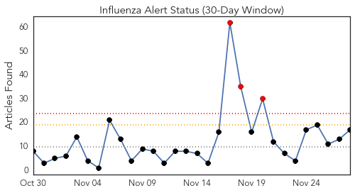
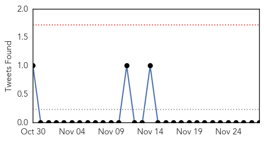
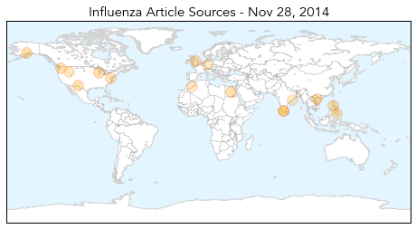
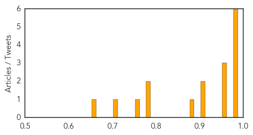

Toggle navigation
Early Warning
Daily Alerts
Influenza
Nov 28, 2014
Compare to:
-
Dengue Fever
Hemmorhagic Fever
Mold/Fungal Infection
Meningitis
Pertussis / Whooping Cough
Middle East Respiratory Syndrome
Cholera
Hepatitis
Chikungunya
Yellow Fever
Bubonic Plague
West Nile Virus
Swine Flu
Ebola
Measles
Unknown
Mumps
30 Day Trends
Web: 3
alerts
, 0
warnings
Twitter: 0
alerts
, 0
warnings
Top Articles:
0.997
Kerala bird flu identified as H5N1 strain
0.995
How Dangerous is H5N1 Virus? Know Symptoms
0.993
How to handle EV D-68, cold and flu season
0.991
Sheboygan, world were struck by 1918 flu epidemic
0.982
Juneau Empire - Alaska's Capital City Online Newspaper
0.981
Nation on high alert for avian influenza A/H5N8
0.973
Urgent call to parents as just one in five children eligible for free flu vaccine receives it
0.970
How Flu Vaccines Can Impact Families
0.956
Three People Dead And One Seriously Ill After Taking Novartis Flu Vaccine
0.925
Philippines bans eating meat of dead horses over Nipah virus cases
0.911
Philippines: Eating horse meat banned due to reported deaths
0.879
How Flu Vaccines Can Impact Families Is Discussed in New Article from Community Health Center of Snohomish County
0.793
Anti-bird flu drive under Central protocol: Minister
0.790
Culling to be over in 3 days
0.766
KBS World Radio
0.724
Odisha on High Alert after Bird Flu Outbreak in Kerala
0.663
Novartis flu vaccine suspended following Italian deaths
Top Tweets:
No tweets found for Nov 28, 2014
Web/News Articles

Tweets

Article Locations

Article Confidences
